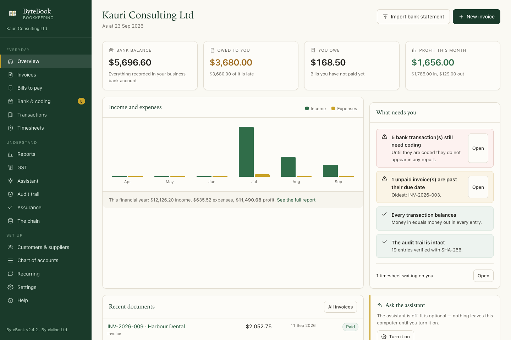
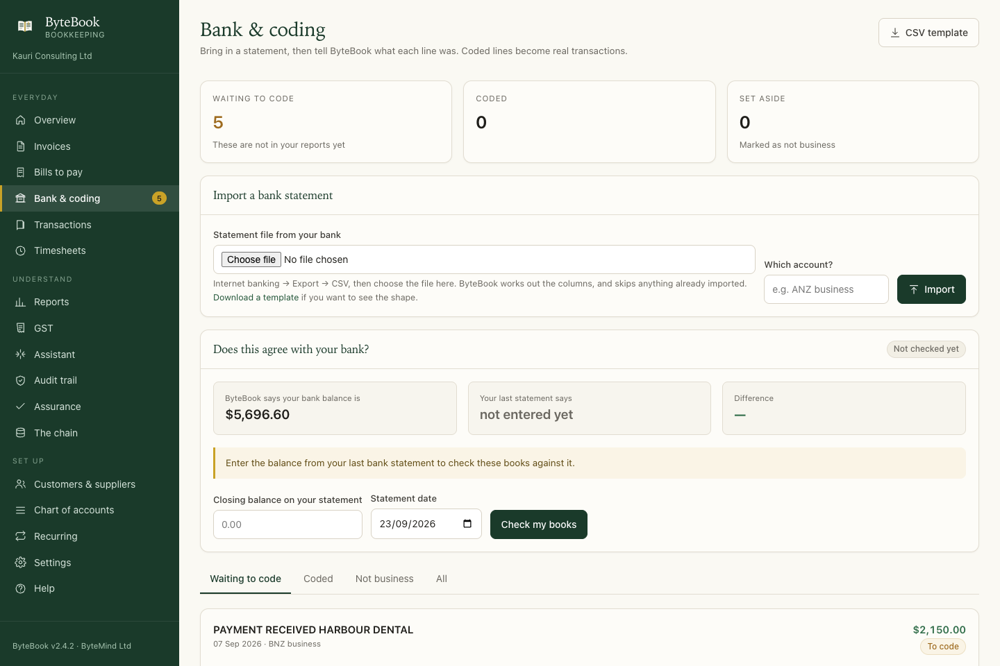
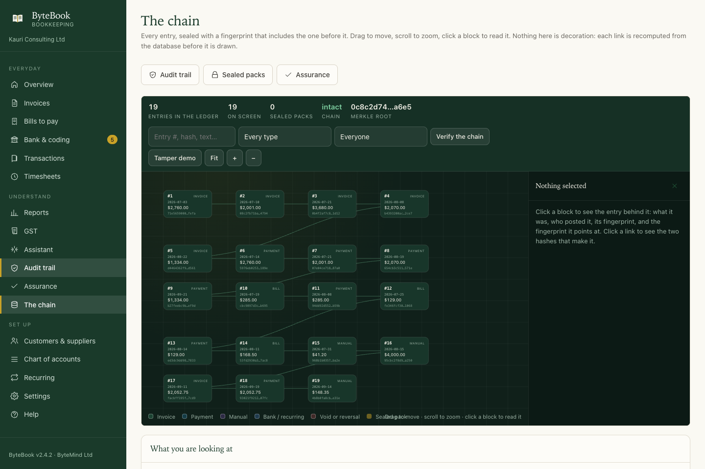

在一套不会伤到任何客户的账目上训练团队
ByteBook 管理一家新西兰企业的账目：开发票、商品及服务税、费用报销、银行对账单导入和各类报表，都在同一个应用里，都在这台电脑上。对会计师事务所来说，这就成了一个训练环境。十二家企业可以运行，一份会把每处更正都留下来的记录，以及十四项可以让员工在真实分录上运行的审计程序。
macOS 桌面应用 · 完全离线运行 · 无需账号，不接入云端，数据不外传

学员弄不坏客户的账，因为根本没有客户
每一次练习都在自己那套账目里运行。不会带到下一次，也不会影响下一个练习。
要经营的是企业，不是读一张表格
学员开出发票、给银行流水逐个科目归类、申报一期商品及服务税，再读那些由他们自己过账的分录算出来的报表。难处理的业务是特意放进去的：迟付的客户、重复的付款、手工凭证。
每个错误都看得见，而且都伤不到账
任何记录都不会被删除或直接改掉。更正是作废：原始分录和它的对冲分录都留着，报表不再计入它们。学员会看到规范的做法是什么样子，因为程序不给他们别的做法。
每一步都对照准则核对
训练手册为每一步注明背后的会计准则或审计准则，具体到条款号；每一处引用都能追到发布机构的原始文件。全书 71 处引用，每一处都对照它所引用的原文核对过。
不同的行业，不同的税务设置，不同的问题
一家没有做商品及服务税登记的企业，能教的东西是登记过的企业教不了的。半年一申报也是这样，免税租金与应税销售并存也是一样。
| 企业 | 商品及服务税 | 申报 | 练的是什么 |
|---|---|---|---|
| Bright Cuts 理发 | 未登记 | — | 整套账目里完全没有商品及服务税的开发票与报表 |
| Kōwhai Advisory 咨询 | 已登记 | 每月，收付实现制 | 迟付的客户，以及跟着钱走而不是跟着发票走的商品及服务税 |
| Tasman Builders Ltd 建筑 | 已登记 | 每两个月，权责发生制 | 分期付款：一份合同、几张发票，按完工进度确认收入 |
| Harbour Cafe & Co 餐饮 | 已登记 | 每月 | 大量小额销售，以及一辆可供私人使用的车辆 |
| Loom & Light 网络零售 | 已登记 | 每两个月 | 事后冲减收入的退款与退货，以及用一笔作废来更正 |
| Marine Parade Rentals 物业出租 | 已登记 | 每两个月 | 免税租金与应税销售并存，申报表需要格外当心 |
| Whirinaki Contracting 园艺承包 | 已登记 | 每六个月 | 很长的申报期、季节性的成本，以及有私人用途的工作用车 |
| Foundry Labs 软件 | 未登记 | — | 还没有收入的企业：只有成本，以及一张能看出谁在出钱的资产负债表 |
| Marine Parade Dental 牙科 | 已登记 | 每月 | 开启安全设置：四种角色、密码，以及处理一次输错的密码 |
| Ngata Plumbing Ltd 水暖 | 已登记 | 每两个月 | 一份有很多笔要归类的银行流水，以及很短的付款期限 |
| Pacific Trading Ltd 批发 | 已登记 | 每六个月 | 买进卖出的存货、一笔大额进口，以及 6 月结账日 |
| Precision Engineering Ltd 工程 | 已登记 | 每两个月 | 专门挑出来让错误四舍五入方式露馅的一批金额 |
每一次模拟都是驱动真实的应用，而不是直接写数据库。所以学员和模拟走的是完全相同的页面。
学员实际在做什么
就是真实事务所里一个月走下来的顺序。

归类才是判断力的地方
小型企业账目上多数错误都发生在这个页面：速度快，一次要做几百笔。学员必须判断每一笔是什么业务，而程序会告诉他们还有多少个判断没做。
页面的下半部分把归类变成一个检验：学员填入银行对账单的期末余额和日期，ByteBook 会回答它自己记的银行余额是否对得上。
- 余额调节不是打杂的算术，它是把账目与账外的凭证绑在一起的那道检验。
- 余额可以对上，同时还有二十行没归类——那不叫余额调节。
十四项自己会跑的程序，并且报告它们查到了什么
每次打开都会在真实分录上重新运行，每一项都能导出成可以让别人接手看的审计工作底稿。
A01账簿完整性每笔分录仍与它被封存的指纹一致A02复式记账每笔分录的两边都相等A03银行余额调节账簿与对账单一致，且每一行都已处理A04应收账款别人欠的钱真实存在、账龄正确、不会多记A05应付账款欠别人的都记了，没有一笔账单被付两次A06商品及服务税核对申报表与账簿一致，也与已申报的数据一致A07手工凭证列出所有手工分录，以及是谁、什么时候过账的A08重复付款一周之内向同一供应商付出相同金额A09截止性日期在未来，或在已封存期间内的分录A10凭证与合规超过 50 元的税务发票，以及缺少必要信息的凭证A11费用整数金额、大额一次性支出，以及看起来像私人开支的费用A12封存包每个已封存的期间，仍与现在的账簿一致A13权限与日常维护谁能登录，上一次备份是什么时候A14复算数字用最原始的记录把报表重算一遍这些程序只报告查到了什么，结论留给人。这正是程序和意见的区别，也是手册要养成的习惯。
一份能看出自己被改过的记录
每笔分录都带一个 SHA-256 指纹，而这个指纹包含上一笔分录的指纹。改动一个旧数字，整条链就会说出来：它后面每一个指纹都不再对得上。已封存的期间用同样的方式再封一层。
受训的审计人员会看到这件事的两面：完整记录长什么样，以及有人绕过应用直接改数据库时，它长什么样。
- 用一笔作废来更正，不会断开链条。直接改原始分录才会。
- 链条证明的是完整性，不是准确性。两者都需要，手册也一直把它们分开讲。

一本注明出处的手册，和一座能证明这些出处的资料库
谁都可以说某条规则是对的。真正有用的问题是：读者能不能自己核对。
这些引用从哪里来
新西兰的会计准则与审计准则由外部报告委员会（XRB）免费发布：NZ IFRS 包含国际会计准则理事会（IASB）的原文，ISA (NZ) 与 PES 系列准则包含国际审计与鉴证准则理事会（IAASB）的原文。IAASB 手册本身由 IFAC 免费发布。
ByteBook 的资料库下载这些文件、保存下来，并为每份文件记录指纹。手册里的每一处引用都会写明准则、条款号、发布机构、文件地址，以及所核对那一份的指纹。
我们公开什么，不公开什么。准则属于各自的发布机构，我们不复制它们。手册只做带署名的短引用，并链接到原文出处。
发布前跑三道检查。每处引用必须指向资料库里真实存在的准则；引用的段落必须能在发布机构自己的原文里按条款号找到；每份文件必须仍与下载时记录的指纹一致。
最后一道最有用。如果发布机构出了新版本，指纹就不再一致，手册会先对照新版重检，然后才重新发布。
要训练会计与审计人员的事务所
以及希望把账目放在自己电脑上的小型企业。
新入职的会计人员
在一家行为像真企业的公司里做一个月：客户迟付款、账单被付了两次、第一次对账总是对不上。
受训的审计人员
十四项程序分别是为了什么，以及账目出错时“例外”长什么样。还可以自己封存一个期间，再故意把它改坏。
小型企业
开发票、商品及服务税、费用和报表，账目放在企业主自己的电脑上。一个文件，不用账号，审计线索无法被悄悄改动。
ByteBook 不做什么。它根据你归类的交易算出商品及服务税的数字；某一笔供应是否应税，是关于那笔供应本身的问题，新西兰税务局才是最终依据。它准备税务工作底稿，但不代为申报。它报告账目里有什么，不下结论。
关于应用本身。ByteBook 是 macOS 桌面应用，只监听 127.0.0.1，账目保存在一个 SQLite 文件里，密钥保存在 macOS 钥匙串中。它是临时签名的，所以在还没见过它的电脑上第一次打开时，macOS 可能会让你确认一次。可选的智能助手默认关闭，永远不会改动任何数字，也可以完全断网运行。